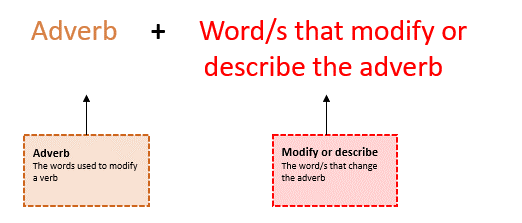

Activity 6: Prepositional phrases – Bush fires
Audio: Bush Fires
Listen to the audio Bush fires.
Listen to the audio and answer the questions.
Where are the bushfires? Select more than one answer.
Select the missing prepositional phrase in this sentence: There are fires blazing .
Select the missing prepositional phrase in this sentence: 3 fires have broken out .
Select the missing prepositional phrase in this sentence: With strong winds forecast .
Adverbial phrases
An adverbial phrase tells you more about the adverb.
Adverbial phrases can be used to describe:
how
when
why
where
how often.
A simple adverbial phrase is:

For example:
Please complete the form as soon as possible. (Not just soon)
Your order is being processed as fast as possible. (Not just fast)
I sincerely apologise. (More than just sorry)
More examples of adverbial phrases are listed in the table below.
| How | When | Where | Why | How often |
|---|---|---|---|---|
| In anger | Before sunrise | Right next to her | To console her | Every month |
| Like a snail | Exactly in 3 hours | At every signal | For a much-needed break | Every now and then |
| Sincerely happy | Earlier than expected | By the store | So as to finish to the work | Rarely |
| Very quickly | As soon as possible | Next to the play area | Owing to the extension | Annually |
| Somewhat sad | Even before the announcement | Around the main road | Due to her continuous efforts | All Fridays |
| A lot more sophisticated | Within a matter of months | In all major cities | Because of the heavy rains | As often as required |
| With enthusiasm | After the lockdown | On this swing | In order to find out | Every few minutes |
Answers
Listen to the audio and answer the questions.
Where are the bushfires? Select more than one answer.
| Choices | Answer/s |
|---|---|
| Wollemi National Park | |
| Oxley Wild Rivers | |
| Mount Hamer State Forest | ✓ |
| Baxter National Park | ✓ |
| Bendalong Point |
Select the missing prepositional phrase in this sentence: There are fires blazing ___.
| Choices | Answer |
|---|---|
| over the state today. | |
| around the state today. | |
| across the state today. | ✓ |
Select the missing prepositional phrase in this sentence: 3 fires have broken out ___.
| Choices | Answer |
|---|---|
| at the Baxter National Park. | |
| in the Mount Hamer State Forest. | ✓ |
| in the Coastal town of Salisbury. |
Select the missing prepositional phrase in this sentence: With strong winds forecast ___.
| Choices | Answer |
|---|---|
| for the next 4 hours. | |
| for the next 20 hours. | |
| for the next 24 hours. | ✓ |
Show transcript – Bush Fires
Greg: And now with the latest on the state's bushfires, here's Leslie McIntyre.
Leslie: Thanks, Greg. Yes, well, no good news today, I'm afraid. There are fires blazing across the state today. 3 fires have broken out in the Mount Hamer State Forest in the west, while Baxter National Park in the south has 2 major outbreaks, one approaching the coastal town of Salisbury. With strong winds forecasted for the next 24 hours, firefighters are preparing for continuing difficult conditions. Our next update will be later this afternoon, at 2:45, so stay tuned to 3WB.